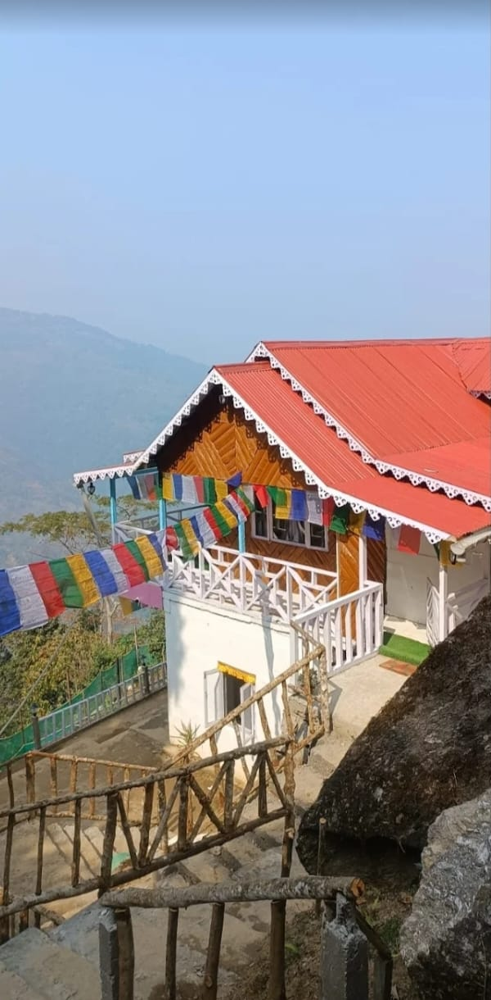
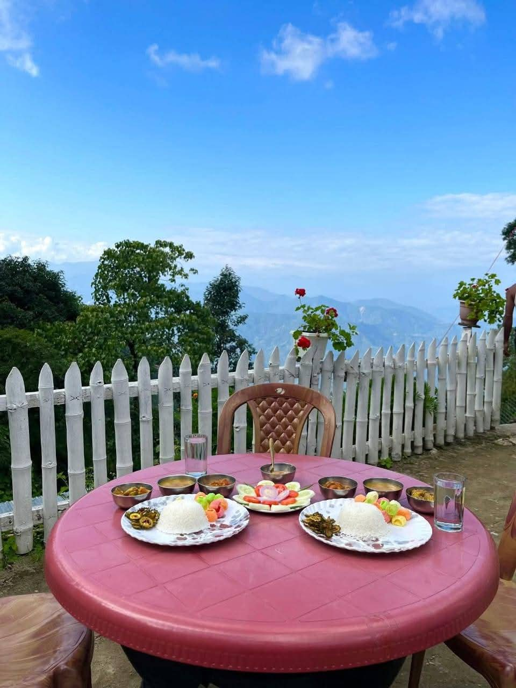
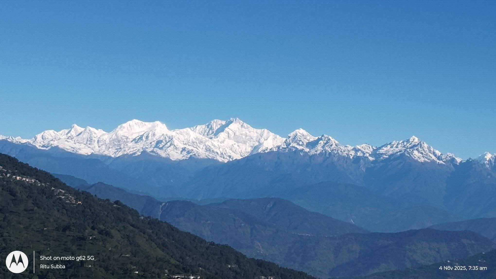
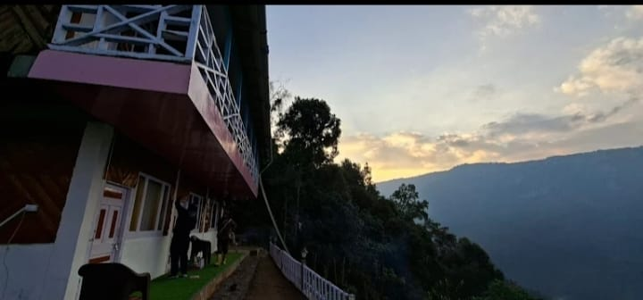
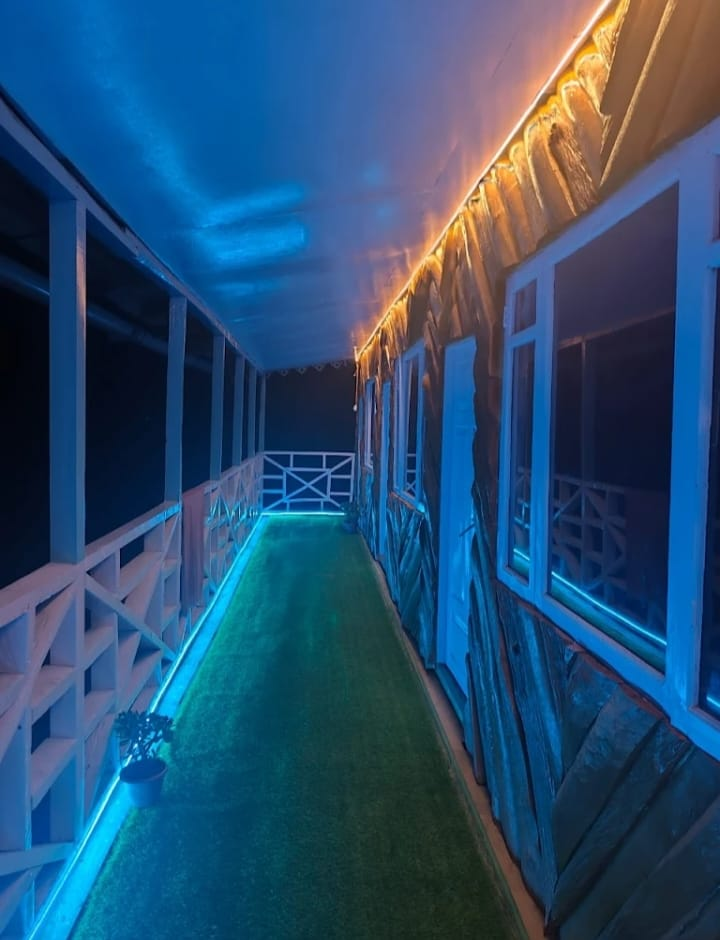
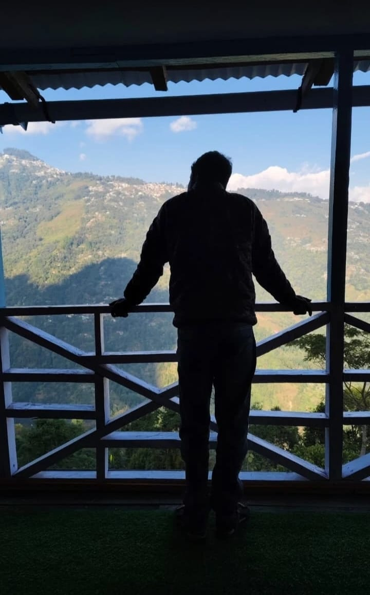
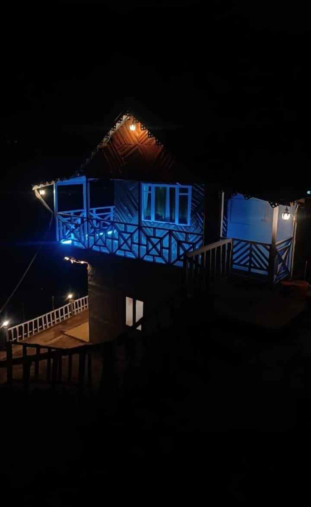

A mountain homestay where cloud-draped peaks greet you at dawn — just 20 km from Darjeeling.


Perched on a sun-kissed ridge just 20 kilometres from Darjeeling, Dawaipani is a place where time slows and the mountains take centre stage. Named after the local spring that has nourished this land for generations, our homestay sits at the heart of a quiet hillside community in the Darjeeling district of West Bengal.
From your balcony, watch the Kangchenjunga massif turn gold at dawn, listen to the wind carry pine and rhododendron, and fall asleep to a silence you can only find in the hills. This is not just accommodation — it is a living experience of the Eastern Himalayas.
We offer five warm, well-appointed rooms — each a double bedroom with an attached bathroom and a window framing a different slice of the mountains. Our resident chef prepares fresh, home-style meals celebrating the flavours of the hills.
Spacious bedrooms with two full beds, comfortably sleeping up to 4 guests each.
Every room has its own private attached bathroom for your comfort and privacy.
Fresh, hearty hill meals — dal bhat, thukpa, momos, and seasonal local produce.
Panoramic views of the world's third-highest peak right from your window.
Open balcony with front-row seats to the most breathtaking golden-hour skies.
20 km from Darjeeling — close enough to explore, far enough to truly unwind.





Check availability on our live calendar and send your booking request — we'll be in touch within 24 hours.
Check Availability & BookDawaipani, Darjeeling District
West Bengal — 734 xxx, India
Approx. 20 km · 45–60 min by car. Shared jeeps available from Darjeeling's Chowk Bazar stand.
Bagdogra Airport (IXB) — approx. 80 km. Pre-booked taxis recommended.
New Jalpaiguri (NJP) — approx. 85 km. Taxis to Darjeeling available outside the station.